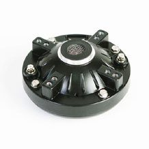
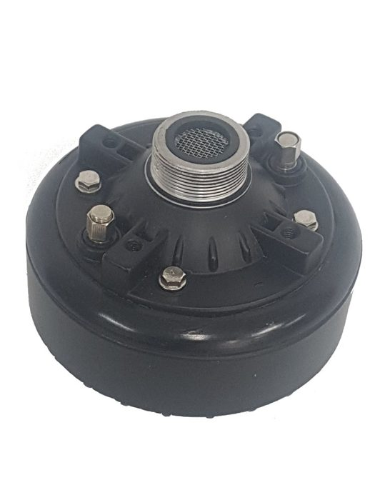
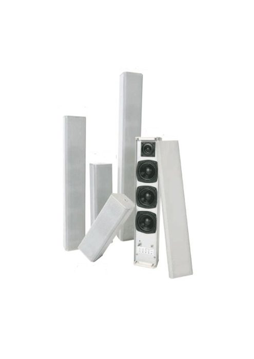
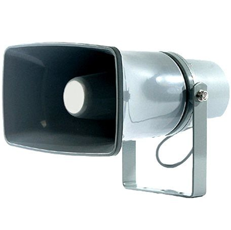
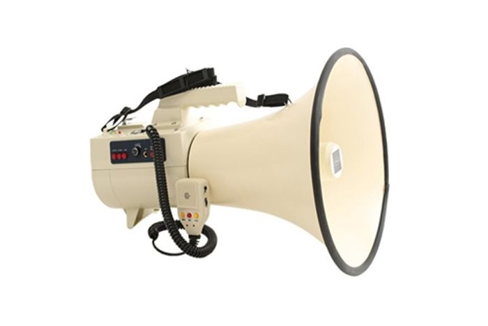

Loudspeakers
Loudspeakers for sports stadiums, public transportation vehicles, facilities, schools, churches, gyms, airports, clubs, industrial and military sites, and vessels.
Compression Driver Units

300W, 8 ohm
| Power rating | RMS 300 W |
| Frequency range | 150 – 5,000 Hz |
| SPL | 115 dB |
| Net weight | 2,704 g |
| Magnet | Neodymium |

100W, 8 ohm
| Power rating | RMS 100 W |
| Frequency range | 150 – 6,000 Hz |
| SPL | 112 dB |
| Net weight | 1,740 g |
| Magnet | Neodymium |

100W, 11 ohm
| Power rating | RMS 100 W |
| Frequency range | 350 – 5,000 Hz |
| SPL | 109 dB |
| Net weight | 1,803 g |

80W, 8 ohm
| Power rating | RMS 80 W |
| Frequency range | 180 – 6,000 Hz |
| SPL | 108 dB |
| Net weight | 1,360 g |
| Magnet | Neodymium |

75W, 8 ohm
| Power rating | RMS 75 W |
| Frequency range | 250 – 6,000 Hz |
| SPL | 126 dB |
| Net weight | 2.7 kg |
| Magnet | Ferrite |
Column Speakers
Aluminum housing in silver and black. Frequency range: LA series 250 Hz – 15 kHz, LS series 60 Hz – 20 kHz.

LA series
| Model | Power | SPL (1W/1m) | Speakers | Size (mm) | Weight |
|---|---|---|---|---|---|
| LA-120 | 20 W | 110 dB | 5" 10W x 2 | 330 x 174 x 110 | 3,500 g |
| LA-130 | 30 W | 113 dB | 5" 10W x 3 | 385 x 174 x 110 | 4,500 g |
| LA-140 | 40 W | 116 dB | 5" 10W x 4 | 575 x 174 x 110 | 5,500 g |
| LA-160 | 60 W | 118 dB | 5" 10W x 6 | 830 x 174 x 110 | 6,000 g |

LS series
| Model | Power | SPL (1W/1m) | Speakers | Size (mm) | Weight |
|---|---|---|---|---|---|
| LS-220 | 20 W | 91 dB | 2 speakers + 1 tweeter | 360 x 90 x 85 | 2,500 g |
| LS-230 | 30 W | 92 dB | 3 speakers + 1 tweeter | 460 x 90 x 85 | 3,500 g |
| LS-240 | 40 W | 93 dB | 4 speakers + 1 tweeter | 560 x 90 x 85 | 4,500 g |
| LS-260 | 60 W | 95 dB | 6 speakers + 1 tweeter | 760 x 90 x 85 | 6,500 g |
Horn Speakers

TL-310
Highly effective horn speaker with the U-type bracket
| Power | 10 W |
| SPL 1W/1m | 105 dB |
| Frequency | 600 – 7,000 Hz |
| Material | Plastic / Aluminium |
| Weight | 1.3 kg |
| Color | Grey |

HS-50RT
Highly intelligible reflex horn speaker with matching transformer
| Power | 50 W |
| SPL 1W/1m | 116 dB |
| Frequency | 350 – 20,000 Hz |
| Material | Aluminum |
| Weight | 3.3 kg |
| Color | Grey |

HS-30BST
Compact reflex paging horn speaker
| Power | 30 W |
| SPL 1W/1m | 112 dB |
| Frequency | 350 – 20,000 Hz |
| Material | Plastic |
| Weight | 2.8 kg |
| Color | Grey |
Megaphones

PA-2
| Output | 10 W |
| Functions | Mic., siren and whistle |
| Dimensions | 155 x 250 mm |
| Weight | 590 g |

PA-335ASW
| Output | 15 W |
| Functions | Mic., siren and whistle |
| Dimensions | 190 x 315 mm |
| Weight | 1,070 g |

PA-9500B
| Output | 60 W |
| Functions | Mic., siren and whistle |
| Dimensions | 350 x 500 mm |
| Weight | 1,070 g |
Marine Speaker

BHS-20W
| Power | 20 W |
| SPL 1W/1m | 106 dB |
| Frequency range | 300 – 7,000 Hz |
| Material (color) | ABS (gray) |
| Mounting | 4-ø8, 135 x 150 mm |
| Terminal block | UL-94 300V/15A |
| Weight | 2.9 kg |
Military Loudspeaker for VRC-946K Radio series

VRC-946K series
| Input impedance | 600 ± 60 Ω |
| Frequency range | 250 – 5,000 Hz |
| Power rating | 2 W |
| Frequency response | Over 95 dB @ 750 – 1,250 Hz |